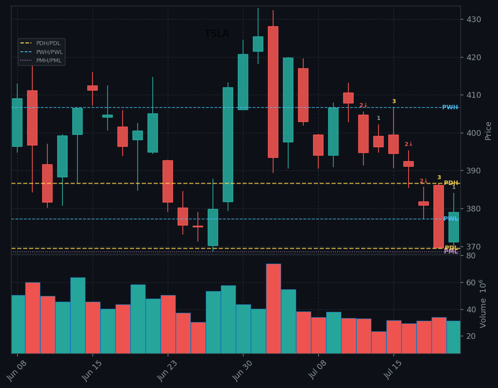

Futures surging Tuesday led by Nasdaq (+1.36%) as investors buy the technology pullback with 87% of S&P reporters beating so far. MMM jumped 7%+ on a beat and raised guide, GM beat and lifted full-year outlook. But the bigger story is tomorrow: GOOGL and TSLA report Wednesday after close alongside IBM, NOW, TXN — and AMD's Advancing AI event lands the same day. Today is a positioning session. The…
Three earnings setups — GM (indecisive/inside, wait), MMM (bullish kicker gap, biggest mover of the three, CPW into close), SCHW (flat/3-2 reversal into ATH, be patient). TSLA on watch for good-news continuation. Bitcoin over $67K activates COIN.

Lebanon President bilateral meeting with Trump at the White House today (11:15 AM) — direct geopolitical catalyst for Middle East dynamics and Iran ceasefire negotiations.
Iran 10-day cessation of strikes proposal still in play. WTI +0.97% at $83.26, Brent at $90.07 — oil elevated but headline-sensitive.
NOC -4.4% on soft defense guidance — market may be pricing in a peace dividend if ceasefire talks progress. HAL -3.7% follows.
House GOP meeting at White House 5:00 PM — tariff framework expiration timeline on the agenda. Trade policy wildcard into close.